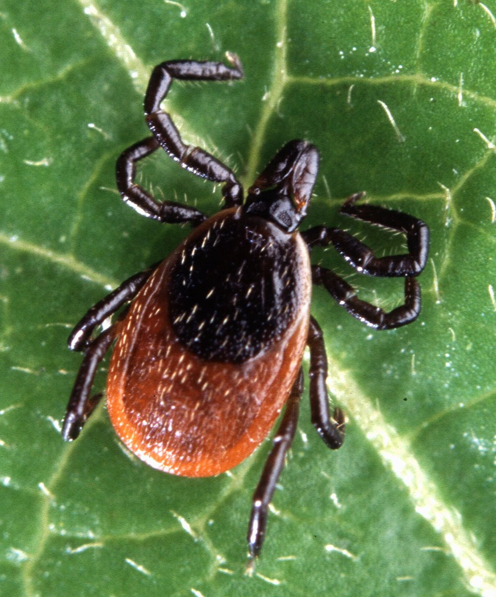
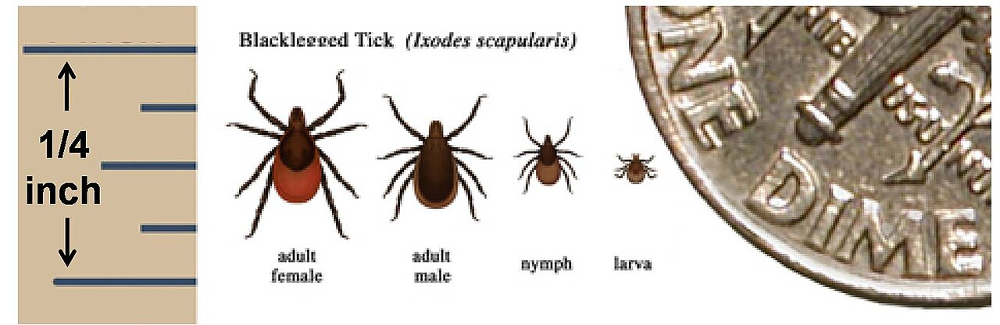

Blacklegged Tick
Ixodes scapularis
- Also called
- Deer tick, Ixodes scapularis
- Kind
- insect
- Native to Vermont
- yes
- Legal status
- Not regulated. The most abundant tick in Vermont; the Health Department reports it causes over 99 percent of the tick-borne illnesses reported to it. (checked 2026-11-01)
Pictures


Names
Blacklegged tick, also called the deer tick, Ixodes scapularis. A tick is an arachnid (related to spiders and mites), not an insect; this library files it with the insects and other small animals.
Range and habitat
Throughout Vermont (Health Department). The Agency of Agriculture calls it the most abundant tick in the state. The Health Department table gives its habitat as wooded areas and fields with tall grass and brush. The Agency says the larvae and nymphs 'quest' (wait for a host) in leaf litter and short vegetation and the adults from taller vegetation.
How to identify (by season; look-alikes and the key difference)
From the photographs in this note, not from a page's wording: the adult female has a dark brown to black shield just behind the head and a swollen orange-red abdomen, with black legs; the drawing shows the adult male as smaller and dark all over, the nymph smaller again and the larva smallest, all beside a dime for scale. For the difference from the American dog tick, compare the pale patterning on the dog tick's back in American Dog Tick. Do not rely on this note to name a tick that matters to a person's health: the Agency of Agriculture accepts tick submissions for identification, and the Health Department's page asks for reports through the Vermont Tick Tracker.
Through the year
Dates are typical for Vermont and shift with elevation and year; "approximate" means the source gave a season and the dates are a translation of it.
| When | What | Look for | What to do | Dates |
|---|---|---|---|---|
| May 1 to Jun 30 | nymph (watch) | The nymph stage peaks in May and June (Vermont Department of Health table). Nymphs are very small; the sizes drawing in Pictures shows them beside a dime. | Check your body, clothing, gear and pets after time in woods, brush or tall grass; shower soon after. | stated |
| Oct 1 to Nov 30 | adult (watch) | A second rise in October and November, mostly adult females (Vermont Department of Health table). The page adds that blacklegged ticks can be found any time temperatures are above freezing. | Keep checking after fall work in the woods and brush; a thaw in winter is not a safe time. | stated |
Signs on the land (tracks, scat, browse, nests, holes, calls)
Ticks are found on people, pets and animals, not as signs on the ground. The Agency says larvae are active in mid to late summer, nymphs in late spring and early summer, and adults in spring and fall (and in winter when temperatures are above freezing).
Role in the forest (what it eats, what eats it, what it needs)
It feeds on blood at every stage after hatching (CDC). The Agency says larvae and nymphs feed on small rodents and the adults on larger animals such as white-tailed deer (White-tailed Deer). CDC says the life cycle of this species generally lasts about two years. The Vermont illnesses it can pass on: Lyme disease, anaplasmosis, babesiosis, hard tick relapsing fever and Powassan virus disease (Agency of Agriculture); the Health Department's page on illnesses adds a list that is not tied to a species there.
What helps it thrive (not something to encourage; this is what it needs, so you know where it is)
- Woods and their edges. In the Connecticut study in the Tick Management Handbook, 67 percent of the blacklegged ticks sampled on residential properties were in densely wooded areas and 22 percent in the unmaintained edge between woods and open ground; 9 percent were in ornamental plantings and 2 percent in lawn. On lawns, 82 percent of the ticks were within 3 yards of the lawn edge, especially along woods, stone walls and ornamental plantings.
- Shade, leaf litter and humidity. The Handbook says altering the landscape to let in more sunlight and lower the humidity makes an area less hospitable to ticks, and names leaf litter and groundcover as places that harbor them.
- Hosts. Deer and white-footed mice are the hosts the Handbook puts first, and it says deer abundance is the key factor.
- Not read: whether any Vermont forest type or season of the year matters more; the Vermont sources read do not say.
Managing for it (habitat practices) and living with it (conflicts and damage)
Around a house, the Handbook (Connecticut, 2000s) recommends focusing on the areas the family uses, not the whole property: keep grass mowed; remove leaf litter, brush and weeds at the lawn edge and around stone walls and wood piles; prune trees and shrubs at the lawn edge to let in sunlight; make a border of wood chips, mulch or gravel at least 3 feet wide between the lawn and the woods; move swing sets and sandboxes away from the woodland edge; move firewood piles and bird feeders away from the house; and use deer-resistant plantings or deer fencing. It does not say these steps have been tested in Vermont. For people and pets, the Health Department's prevention page says the best approach is to avoid tick habitat in spring through fall (it names wooded and brushy areas); if you cannot, use an EPA-registered insect repellent, wear long pants, long sleeves and long socks, check your body, clothing, gear and pets, and shower soon after coming inside. Removal steps are on a page the Department links ('Prevent Tick Bites & Tick Bite Illnesses'), which was not read.
See also Preventing Tick and Biting Fly Bites in the Woods for the full protect, check, remove and watch steps.
Legal status
None found.
Sources
- Vermont Department of Health, Tick activity in Vermont: https://www.healthvermont.gov/disease-control/tick-bite-illnesses/tick-activity-vermont (read 2026-11-01)
- Vermont Department of Health, Tick bite illnesses (prevention): https://www.healthvermont.gov/disease-control/tick-bite-illnesses (read 2026-11-01)
- Vermont Agency of Agriculture, Ticks: https://agriculture.vermont.gov/public-health-agricultural-resource-management-division/plant-health-and-pest-management/ticks (read 2026-11-01)
- Vermont Agency of Agriculture, tick surveillance: https://agriculture.vermont.gov/node/6345 (read 2026-11-01)
- CDC, Tick Lifecycles: https://www.cdc.gov/ticks/about/tick-lifecycles.html (read 2026-11-01)
- Stafford, Tick Management Handbook (Connecticut Agricultural Experiment Station, with CDC): https://stacks.cdc.gov/view/cdc/11444/cdc_11444_DS1.pdf (read as text 2026-11-01)
What this page is based on
Kind of source: primary-agency (Vermont Department of Health, Agency of Agriculture and Fish & Wildlife pages, summarizing fetches)
What was read: Vermont Department of Health 'Tick activity in Vermont' table and 'Tick bite illnesses' prevention page; Vermont Agency of Agriculture ticks page and its 'surveillance' page (all summarizing fetches, 2026-11-01); CDC 'Tick Lifecycles' page (summarizing fetch); Tick Management Handbook, Kirby C. Stafford III, Connecticut Agricultural Experiment Station, with CDC (read as text; its habitat percentages are from Connecticut properties, not Vermont). No page read describes the tick's size or color in words: the identification below is from the two photographs and the sizes drawing.
Last checked: 2026-11-01
Vermont land and forest reference, built 2026-11-01. Rules and dates here are summaries, not legal advice; dates shift with elevation and year. Photo and recording credits · Note: _reference/US-VT/Species/Blacklegged Tick.md